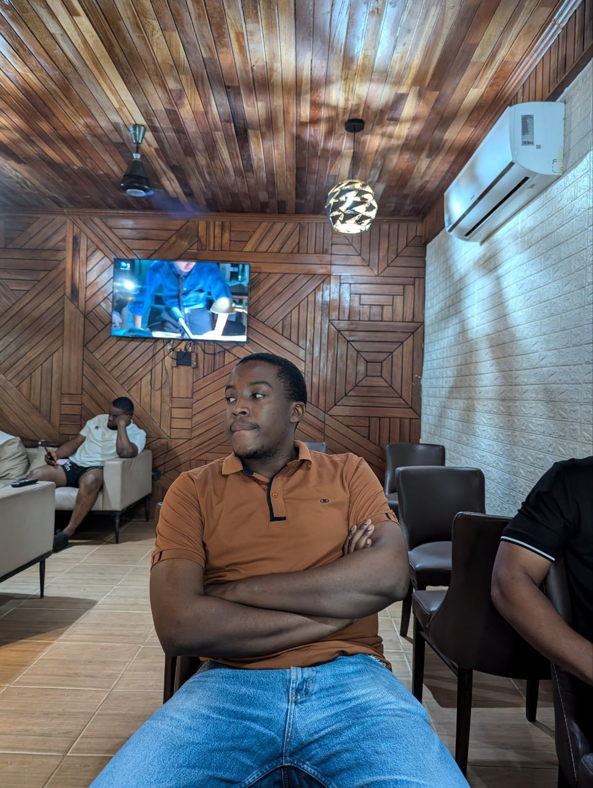

Curtis Asakpo

Summary
I have fair experiences in data collection and analytics
but I am looking to expand my knowledge and skills in the field of data science.
I am a fast learner and I am willing to take on new challenges.
Education
- Bachelor of Science in Natural Resources Management, Kwame Nkrumah University of Science and Technology , 2025
- High School Diploma, Tarkwa Senior High School, 2018
Work Experience
- Intern, Project Department, BCM Company, 2023
- Environmentalist Intern, Gold Fields Ghana Limited, 2024
- Workshop, Vacational Training, 2024
Skills
- Data Analysis
- Microsoft Office Suites
- Data Visualization
- Statistical Analysis
- R programming
Others